Chapter 16
Control of a rank
16.1 Introduction
A player is inclined to play ‘bottom-up’, i.e. from his own side of the board, in the direction of his opponent. Because of this, the effect that pieces can have on a rank escapes our attention now and then. Imagine how many pieces have already been blundered by overlooking the horizontal activity of an enemy piece! See, for instance, the following opening trap: 1.e4 c5 2.♘f3 d6 3.c3 ♘f6 4.♗e2 ♘xe4?? 5.♕a4+.
When I analysed games with the Dutch grandmaster Karel van der Weide, it struck me that I had trouble foreseeing ‘long’ queen moves like ♕a4-g4 or ♕b3-h3. For him, finding such moves was never a problem – he used to churn them out like nobody’s business.
In this chapter we look mainly at ways to involve our pieces in the game via a rank. In the following example we even see the white player using two ranks.
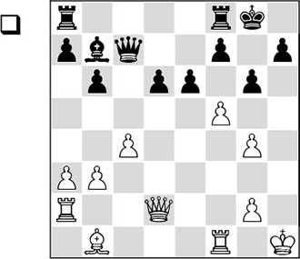
White has a tremendous attacking position. With his next move he creates a mate threat with 2.♕h6.
1.f6
Black has only one defence.
1…♔h8 2.♕h6 ♖g8
The first threat is warded off, but now White involves his rooks in the attack.
3.♖f3!
Now the immediate threat is 4.♕xh7+! followed by 5.♖h3#. This manoeuvre is called the ‘rook lift’: the rook is moved to a certain rank, on which it will join the attack.
3…♗xf3 4.gxf3
But now it is the other rook that gets to play the starring role on the second rank. Again White threatens the queen sacrifice.
4…d5

5.f4!
5.♖h2 would also have won, but the text move is the most accurate. White mustn’t be tempted to play 5.♕xh7+?? in view of 5…♔xh7 6.♖h2+ ♕xh2+.
5…dxc4 6.♕xh7+ ♔xh7 7.♖h2#
We have looked at the effect of a piece on one of our own ranks. Some of the opponent’s ranks, especially the seventh or eighth ones, can be objects of interest. From our experience, we know that the invasion of the enemy camp can be a strategic goal. In chapter 14, the relation between an open file and the seventh rank was discussed. In the present chapter I want to systematize a few aspects that are connected with the invasion of the seventh (or eighth) rank. Even though in this book the emphasis lies on strategy, in this case I cannot avoid bringing several frequently seen tactical tricks into the limelight.
16.2 Tactical tricks on the rank
In most cases, a lot is happening on the seventh rank. In particular, two rooks on the seventh will often display devastating power. Aron Nimzowitsch already pointed this out a long time ago.
• Winning a tempo
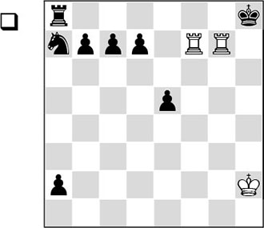
This somewhat unnatural position was given in Nimzowitsch’s book My System. White is substantially behind in material and there is also a black pawn on the point of queening, but White disposes of a useful mechanism that guarantees him the win.
1.♖h7+ ♔g8 2.♖fg7+ ♔f8
Nimzowitsch indicates that the rooks should take up this starting position. Here, they are ready to maraud the entire seventh rank. From this position, White can gain tempi endlessly, thanks to a mate threat. The winning line goes as follows:
3.♖xd7 ♔g8
The king must return in view of the mate threat.
4.♖dg7+
Again, the rooks take up their starting positions.
4…♔f8 5.♖xc7 ♔g8 6.♖cg7+ ♔f8 7.♖xb7 ♔g8 8.♖bg7+ ♔f8 9.♖xa7
And once again Black must play
9…♔g8
due to the mate threat, or play 9…♖xa7. In either case the win is easy for White.
• Mate patterns
In the previous example, we saw the devastating power of two rooks on the seventh (or second) rank. But the harvest that can be gathered by them is not always so great. Sometimes there is nothing more to be gained than a perpetual check – unless help arrives from an unexpected quarter.
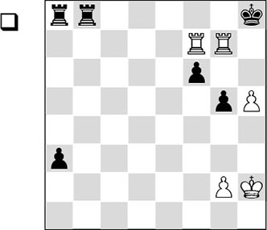
1.♖h7+ ♔g8 2.♖fg7+ ♔f8
Again, the rooks have first taken up the winning starting position from the previous diagram.
3.h6!
This pawn protects the ♖g7, creating a mate threat that cannot be averted. It is important to have an h-pawn here, since there would be no win with a pawn on g6, as is easy to verify.
3…a2 4.♖h8#
• Violent entry
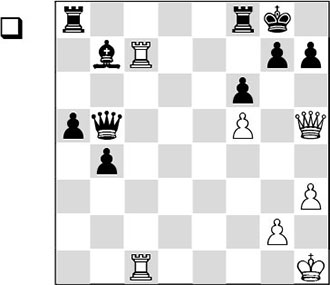
Now and then some wood has to be chopped off so as to enable the other pieces to have a field day on the seventh rank.
1.♖xg7+!
With this heavy sacrifice White forces a passage along the seventh rank.
1…♔xg7 2.♖c7+ ♔g8 3.♕xh7#
By means of the rook sacrifice, White extended the seventh rank, destroying the protective layer around the black king. Then the second rook entered the black position, making the mate inevitable.
We can see that the ‘slight’ pawn weakening …f7-f6 has made the seventh rank vulnerable. With the pawn on f7 there would be no problem for Black.
Such a swift action is characteristic for seventh-rank combinations. In almost all cases it is useful to combine your actions with a check. In the following diagram, Black has an extremely dangerous passed pawn, so White must be quick. He needs to harass the black king with a check.
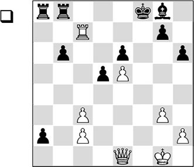
1.♕f1+
White must think carefully on which square to give check. f2 would be wrong, since it would leave him without a good follow-up. Now everything comes with check.
1…♔e8 2.♕b5+ ♔f8 3.♕b4+ ♔e8 4.♕e7#
I couldn’t leave out the next example, which belongs to the classics in chess history.
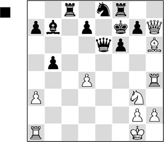
1…♖h8!?
Totally unexpectedly, Black takes over the initiative. By sacrificing a rook he diverts the white queen from the c2-square, so as to invade with his rook on the seventh rank. After long analyses with modern computer programs, the move turns out not to win by force objectively, but the courage needed to play such a move in a game, combined with the psychological effect of such a sacrifice, is a sign of brilliancy. We will see the consequences of the rook sacrifice in the following.
Kasparov indicates that Black was already better and that he should have confirmed his advantage with 1…♕d5. After 2.♖e4 Kasparov claims that Black’s best continuation is 2…♕c4?!.

Analysis diagram
However, the newest versions of the silicon monsters make mincemeat of this: after 3.♖g4!, the white attack is very strong.
The engine suggests that the peculiar move 2…♖c6! keeps the advantage for Black. The idea is that, as yet, White cannot do anything with his ♖e4, whereas Black can increase the pressure on the pinned piece with a possible …♖e6.
2.♕xh8
Of course, Geller felt compelled to accept the sacrifice.
2…♖c2
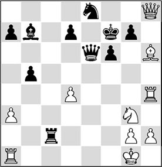
3.♖c1?
White is under the impression that he cannot defend against the strike on g2, so he desperately tries to arm himself against the lethal check on c4 that Black has weaved into the position. Only with the extremely hard-to-find 3.d5!! could White have disrupted the coordination between the black pieces:
A) Various sources give 3…♕b6+ here, but after 4.♔h1 ♕f2 5.♖g1 ♗xd5 White has the beautiful point 6.♖e4!. After 6…♗xe4 7.♘xe4 ♕h4, he will gain the upper hand with, for example, 8.♘d6+ (certainly not 8.♗xg7?? ♕xe4 9.♕f8+ ♔g6 10.♗h6 d5, and Black is clearly better) 8…♘xd6 9.♕xg7+ ♔e6 10.♕g8+ ♔e5.
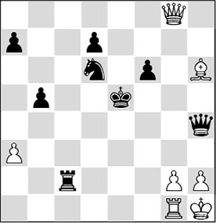
The round-up of the white king is in full swing, and with the elegant quiet moves 11.♖d1! ♕e4 12.♗e3!! White gets a winning initiative. Such moves can hardly be found without the modern ‘silicon monsters’. Even present-day grandmasters are hardly able to see such tricks far in advance. 12…♕xe3 13.♕d5+ ♔f4 14.g3+ ♔g4 15.♖d4+ is the fitting conclusion to this variation.
B) 3…♗xd5 4.♖d1! (the rook is much better on this square, since it keeps a close watch on the bishop on d5) 4…♖xg2+ 5.♔f1 (here we see the difference with the game, where Euwe, with the bishop still on b7 and the white pawn on d4, dashes off a deadly attacking move) 5…gxh6 6.♕xh6 ♗f3! 7.♖d2, and a peaceful conclusion is on the cards.
3…♖xg2+ 4.♔f1
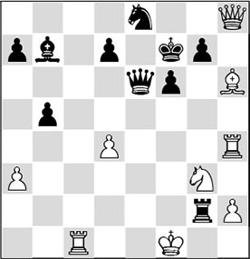
4…♕b3!
This is the original move with which Black crowns his counterattack. White does not have a defence against the invasion of the black pieces. The beautiful point is that the black queen supports the creation of a mating net from the third rank.
5.♔e1
5.♖f4 wouldn’t help either after 5…♕d3+ 6.♔e1 ♕d2+ 7.♔f1 ♕xc1#.
5…♕f3
And White resigned. 5…♕f3 6.♖f4 ♕e3+ would lead to mate.
• Draw by perpetual check
Not everything in the garden of chess is lovely. Sometimes you have to look for counterchances in a bad or even a losing position. In such cases, it is logical to look if we can pose a threat to the enemy king in one way or another. A rook penetrating on the seventh rank, in combination with a knight on the sixth, may work wonders.
A glance at the next diagram position teaches us that White is in great trouble.
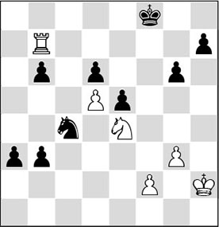
How on earth can he stop the maverick duo on b3 and a3? As it turns out, he can only save the half-point with the following contrivance:
1.♖d7!
As will soon become apparent, this is the only good square for the rook. 1.♘f6 is less accurate, as Black then plays 1…♘d2 2.♖d7 ♘f3+ 3.♔g2 ♘g5, when he has managed to involve his knight in the defence with tempo.
1…b2 2.♘f6 b1♕ 3.♘xh7+ ♔e8 4.♘f6+
Besides giving checks, the knight also protects its own rook, giving the black king no chance to escape.
4…♔f8 5.♘h7+ ♔g8 6.♘f6+
And Black must settle for the perpetual, since after 6…♔h8 he will be mated.
6…♔f8
½-½
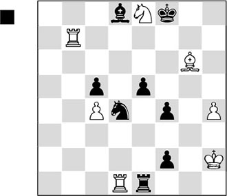
Forsaken by all benevolent spirits, the talented black player produced the move
1…f1♕??
Black could have won easily with 1…♘f3+!, chasing the white king to a square where the promotion is with check: 2.♔h3 f1♕+ and it is all over.
2.♖f7+! ♔g8
More or less forced. 2…♔xe8 might be seen as a losing attempt after 3.♖xf4+ ♔d7 4.♖xf1.
3.♖g7+ ♔f8
3…♔h8 would not have helped either. It is again perpetual check after 4.♖h7+ ♔g8 5.♖g7+.
4.♖f7+ ♔g8
And, disappointed by the course of events, Black played on until the 64th move before finally conceding to a draw. Out of respect for what had happened, the white player refrained from claiming the half-point.
5.♖g7+ ♔f8 6.♖f7+ ♔g8 7.♖g7+ ♔f8 8.♖f7+ ♔g8 9.♖g7+ ♔f8 10.♖f7+ ♔g8 11.♖g7+ ♔f8 12.♖f7+ ♔g8 13.♖g7+ ♔f8 14.♖f7+ ♔g8
And the draw was agreed.
• Springboard
The notion of a ‘springboard’ has been discussed several times already in this book (see also Chapter 14). Here is another striking example of a useful foothold.
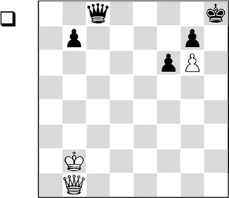
1.♕h1+ ♔g8 2.♕h7+ ♔f8 3.♕h8+ ♔e7 4.♕xc8
1-0
White wins the queen. White penetrated the enemy lines via the springboard on h7, playing the queen to the other side by what Nimzowitsch called ‘Umgehung’.
16.3 Strategic principles
We have seen some interesting things that can take place on the second or seventh rank. Now it is time to formulate some rules with respect to open files, even though they have been discussed extensively in Chapter 14, which dealt with this subject. But we would like to know which files are important, and how we can discern them. In other words: which factors determine how we can penetrate the enemy regions? And the second question that needs to be answered is: ‘How do we know which file is important and which file isn’t?’.
• Extension of the seventh rank by a weakening
With the example of the violent entry by the rook, we already briefly signalled that weakening pawn moves can have far-reaching consequences.
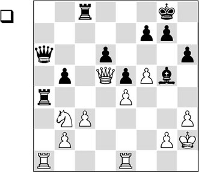
1.g3?
An ugly mistake, extending his second rank. Fischer does not have much trouble exploiting this weakening.
1…♕a7! 2.♔g2 ♖a2
Here we see the consequences of the pawn move 1.g3. Not only 3…♖xb2+ is threatened, but also 3…♖xc3.
3.♔f1
After 3.♖xa2 ♕xa2, 4.♖e2 fails to 4…♖xc3!.
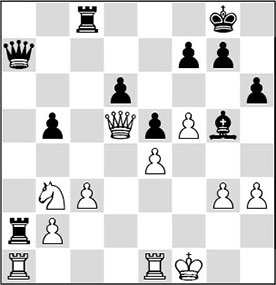
3…♖xc3!
Again this move. Unzicker briefly looked at 4.♖xa2 ♖f3+ 5.♔e2 ♖f2+ 6.♔d3 ♕xa2 7.♖a1, but saw that he was lost after 7…♕xb2, and therefore resigned.
• Bringing on the reserves
If we have penetrated on the seventh rank, this does not automatically yield us a full point. If one of our major pieces has come to pay a visit to the opponent, it will need assistance. How this support can be lent, and what power major pieces can have on the seventh rank, is attractively illustrated in the following fragment.
The Hague/Moscow Wch 1948 (12)
Euwe has just played …f7-f6, with the intention to kick the strong knight off e5. A nasty surprise awaits him.
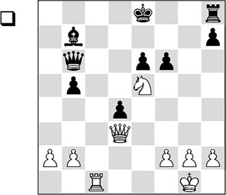
1.♕g3!
Botvinnik leaves the knight right where it is!
1…fxe5 2.♕g7
The queen enters via the seventh rank.
2…♖f8 3.♖c7
And now she receives the required assistance from the rook.
3…♕xc7
More or less forced, since the alternatives do not look particularly rosy either: 3…♕d6 4.♖xb7 d3 looks like a small counterchance, but 5.♖a7 ♕d8 (neither does 5…d2 help: 6.♖a8+ ♕d8 7.♖xd8+ ♔xd8 8.♕xf8+ ♔d7 9.♕f3 is also lost for Black, of course) 6.♕xh7 wins for White, due to the many mate threats.
4.♕xc7
White has obtained a decisive material advantage and converted this into a win in just a few more moves.
• Seventh rank absolute
The reader will not be surprised to hear that in many endgames the seventh rank is a factor of significance. Especially if the enemy king is cut off on the back rank, it may face several specific problems. In his treatment of rook endings, Nimzowitsch already drew our attention to this rule, which he called ‘the seventh rank absolute’. Below, we can see what he meant.
Materially speaking, Black is OK, and besides, he has a passed pawn on the second rank, supported by its own rook. But there are several other factors that cause him to lose nonetheless.
1.e6!
White forcefully breaks open the seventh rank.
1…dxe6
Black is obliged to take the pawn, as otherwise White’s far advanced connected passed pawns will force a quick decision.
2.♖xb7 ♔c8
After a rook move like 2…♖h3 3.♖b8+ ♔c7 4.f7, the pawn will queen.
3.♖xa7 ♔b8 4.♖e7!
Not 4.♖g7?, since after 4…♖f8! 5.f7 the king will be able to leave the fatal back rank with 5…♔c7. After the text move White also threatens 6.f7, but at the same time he keeps the black king imprisoned on the bottom rank.
4…♔c8 5.f7 ♔d8
Just in time, Black has managed to prevent the threat of 6.♖e8+, but since his king is cut off, he will not be able to avoid defeat.
6.♖a7 ♖f8
The only move that does not lose a rook, but the positions that the black pieces have now been forced to take up are highly awkward.
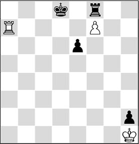
7.♔xh2
And White wins easily. Black cannot move a finger and loses by zugzwang.
16.4 Supply routes along a rank
If there is no possibility to force an entry on the seventh rank, we can avail of another method to penetrate the enemy regions. By moving up a little less far along a file with a rook, we aim for two things:
- we prepare a doubling;
- we want to move to another file via this rank in order to force an entry in this way.
This is how we can succeed in arranging the supply of pieces via a rank. This is what Nimzowitsch called a ‘restricted advance’ on an open file. The idea is to advance the rook along a file in order to achieve some advantage on a certain rank.
In the following schematic position we can see what his idea was.
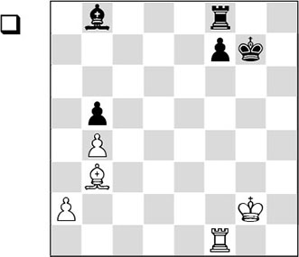
The purpose of an open file is to force an entry on the seventh rank (see also Chapter 14). In this schematic example this does not work on the f-file, but it will work in another way.
1.♖f5
White has set his sights on the b5-pawn, but he also aims to penetrate on the seventh rank via the b-file. With the text move he makes clever use of the f-file. Due to the pressure on f7, Black cannot free himself. The manoeuvre ♖f1-f5xb5-b7 is instructive: the rook changes files after ‘selecting’ the rank that is the most interesting to do this on. Nimzowitsch himself has often applied this method in practice.
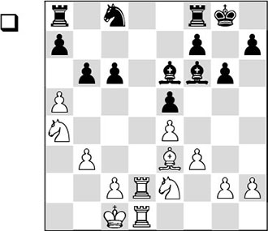
In this position White has built up heavy pressure on Black’s queenside. Moreover, he controls the only open file with his rooks. But for the moment he still cannot achieve very much with this, as Black is controlling all the important entry squares. With his next move White shuffles the cards.
1.♖d3!
On the d-file there is nothing to be gained for the rooks at the moment, so the rook moves up one step (the ‘restricted advance’), so it can be moved to the c-file along the third rank.
1…bxa5?
Black lends a helping hand. The passive defensive move 1…♖b8 would have given him better chances to save the game. Now that he has voluntarily taken his own pawn formation apart, he allows Nimzowitsch to bring his ‘restricted advance’ on the board.
2.♖c3
Also worthy of attention was 2.♘c5.
2…♘e7 3.♖c5
A second example of a ‘restricted advance’. By operating on the c-file, the rook can seek an advantage on the a-file via the fifth rank.
3…♖fb8 4.♘ec3 a6
The pawn on a7 could not be maintained in the long run, but now Black loses the b6-square.
5.♖xa5 ♔g7
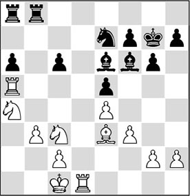
6.♘b6! ♖a7 7.♘ca4 ♖ab7 8.♖xa6
The first harvest is gathered, the rest won’t be long in coming.
8…♘c8 9.♘xc8 ♖xc8 10.♘c5 ♖bc7 11.♖d6 ♖d8 12.♖xe6
1-0
Via a rank, a rook can give important support to an offensive against the enemy king. In the following fragment, White utilizes his rook via the third rank to support a hit-and-run attack.
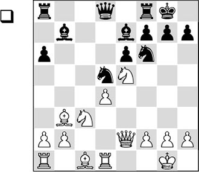
White is clearly better – not only thanks to her extra pawn, but also in view of her attacking chances against the black king.
1.♖d3!
The ‘rook lift’. The rook will be involved in the attack via the third rank.
1…♕d6 2.♖h3 ♘b4 3.♗g5 g6
3…♕xd4 is met by 4.♖d1 ♕c5 5.♗xf6 ♗xf6 6.♘d7, winning. The alternative 3…h6 would, of course, be asking for trouble. After 4.♗xh6! gxh6 5.♕e3!, the white attack is irresistible.
4.♖d1 ♖ad8 5.♕e3 ♘fd5 6.♗xe7 ♕xe7 7.♕h6 ♘f6
Obviously, 7…f6 fails to 8.♘xg6.
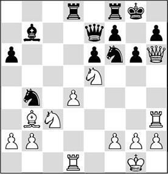
8.♘g4! ♘h5
This loses in elementary fashion. It is a pity that Black does not cooperate to create a more attractive finish, which could have come about after 8…♖fe8. Then White would have replied with the subtle 9.a3! ♘bd5 10.♘e4!, with mate to follow.
9.♖xh5!
1-0
After 9…gxh5, 10.♘f6+ decides.
It doesn’t happen very often that a supply of pieces can be achieved via the sixth rank. Here is a typical example:
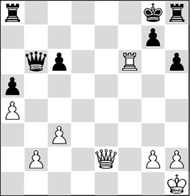
White has invested a rook in the attack. His f6-rook is of crucial importance.
1.♕e6+ ♔h7 2.♖xh6+ gxh6 3.♕f7#
1-0
An elegant epaulette mate!
In the following game, two white rooks pay a visit to the sixth rank. The activity of these Twin Towers is transformed into a lethal mating attack.
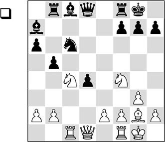
Black has done something wrong somewhere, and now it is time to pay.
1.♘d6!
Thus White increases his influence within the enemy lines.
1…♕xd6 2.♖xc6 ♕d8
In case of 2…♕e5 3.♘d3 ♕f5, Kasparov indicates that Black can hardly move a piece after 4.♖d6!.
3.♕c2 a5 4.♖c1 ♖e8?!
A new inaccuracy, even though the alternative was not very appealing either. After 4…♗b7 5.♖c7 ♗xg2 6.♔xg2 ♗b6 7.♖c6, White has a huge advantage with his strong knight against Black’s bad bishop.
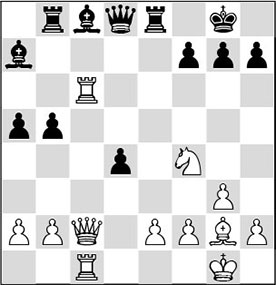
5.♗d5!?
This move entails an extremely interesting thought, which we will discover shortly. At the same time White anticipates 5…♗b7?, since he has prepared an elegant combination in reply to that move: 6.♗xf7+!, and after 6…♔xf7 there follows 7.♖c7+ ♖e7 (or 7…♔g8 8.♕b3+ ♔h8 9.♕f7, with a decisive invasion along the seventh rank) 8.♕b3+ ♔f8 (8…♔f6 9.♖1c6+ ♗xc6 10.♖xc6+ ♔g5 11.♘h3+!, and Black gets mated by force) 9.♘e6+ ♖xe6 10.♕xe6 ♕f6 11.♕xf6+ gxf6 12.♖xh7, and the white rooks will take care of the rest of the job together.
5…♗d7 is no defence either after 6.♖c7 ♖c8 (unfortunately for Black, 6…♗b6? fails to 7.♗xf7+! ♔xf7 8.♕f5+ ♔e7 9.♕e6+, and White wins) 7.♖xc8 ♗xc8 (7…♕xc8 also loses after 8.♗xf7+ ♔xf7 9.♕b3+ ♗e6 10.♖xc8 ♗xb3 11.♖xe8 ♔xe8 12.axb3, and the ending must be winning for White) 8.♕c7, and again, White will force a decisive entry on the seventh rank.
5…♗b6 6.♕b3
Kasparov could hardly restrain himself. Indeed, 6.♗xf7+!? is also very promising after 6…♔xf7 7.♕xh7 d3! (not 7…♗d7? on account of 8.♖g6 ♖g8 9.♘h5 and Black can pack it in right away) 8.♘xd3!, maintaining the attack.
6…♖e7
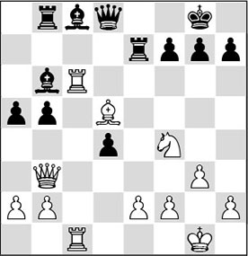
How should White continue? Kasparov has a highly original solution in mind. Pay attention to his bishop during the next few moves!
7.♗f3!
This looks highly peculiar. What is White’s plan?
7…♖e5
Black does not realize what is hanging over his head. He has seen that 7…♗b7 8.♘d5! ♗xc6 9.♘xe7+ ♕xe7 10.♖xc6 would put him in a passive position. But after the text move White can carry out his idea.
This must have been the last thing that Gavrikov expected. Again, the f7-point is the Achilles’ heel in his position.
8…g6
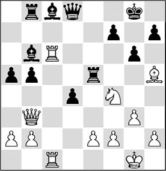
9.♗xg6!
A logical consequence of the preceding moves, but it is great how Kasparov has calculated all this in advance. Not so good was 9.♘xg6? in view of 9…a4!.
9…hxg6 10.♖xg6+ ♔f8 11.♖h6
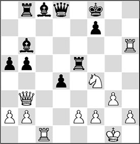
11…♔e7
The king tries to hide in the centre. On the flank it would have been caught immediately: 11…♔g7? 12.♖h7+!, followed by mate in two. The other attempt at salvation, 11…♖g5, would have run into a nice demonstration of ‘sixth rank play’: 12.♖cc6! ♖b7! (very pretty is the combination after 12…♔g7? 13.♖h7+! ♔xh7 14.♕xf7+ ♖g7. Now White gives mate with 15.♖h6+! ♔xh6 16.♕h5#) 13.♖h8+! ♖g8 14.♖ch6 (now the threat is 15.♘g6+!) 14…♕g5 15.♖g6!, deciding the battle.
Finally, 11…♕d7 loses to 12.♖cc6! ♗c7 and now the subtle 13.♕f3!, a move which is hard to find.
12.♖cc6
This is always the standard move with which White adds new stimuli to his initiative. The rooks on the sixth rank exert a tremendous influence.
12…♖f5
Black had to give extra protection to the f7-point, as becomes clear after 12…♗d7 13.♘g6+! fxg6 14.♖h7+ ♔e8 15.♕f7#.
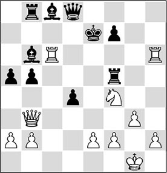
13.♕f3!
Another clever attacking move. Here, the plan with 13.♘g6+ was not the best. After 13…fxg6 14.♖h7+ ♔f8 15.♖h8+ ♔g7 16.♖xd8 ♗xd8, White doesn’t seem to have much, but there is still something in the position! White would have had to find 17.♖xg6+!, however. After 17…♔xg6 18.♕g8+ ♔h6 19.♕xd8, the black pieces cooperate so badly that he must lose more material by force.
13…♗c7
It goes without saying that on 13…♖e5, White had planned 14.♘g6+! again.
14.♕e4+ ♖e5
After 14…♗e5, White regains his piece with the simple 15.♘d3, while the black king still hasn’t reached safety. Now White can finally carry out his long-prepared combination.

15.♘g6+!
At the right moment, the seventh rank is forced open as well. Now the supremacy of White’s major pieces is more than Black can handle.
15…fxg6 16.♖h7+ ♔f8 17.♕xg6
Black resigned. He will be mated.
It is even possible for a rook to participate in an attack from the fourth rank. Here is a magnificent example by Kasparov’s greatest rival – a game which Karpov ranked among his own favourites.
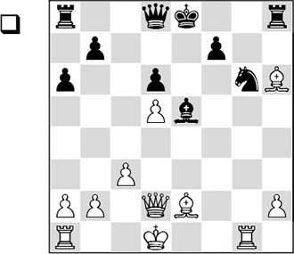
22.♖g4!
In this position, the fourth rank is very useful for White – for defensive purposes as well as attacking ones.
Black might now have considered taking on h2, since he will come under heavy fire anyway.
22…♕f6 23.h4! ♕f5 24.♖b4!
Preventing queenside castling, which at this moment would lose the queen after 25.♗g4.
24…♗f6 25.h5 ♘e7
Not 25…♘e5? 26.♖f4!, and Black loses the bishop on f6!
26.♖f4! ♕e5
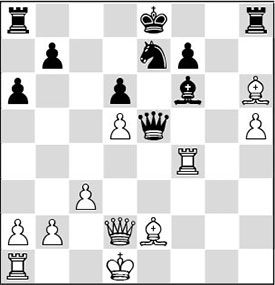
27.♖f3!
Now the threat is 28.♗f4. The versatile rook is driving Black crazy!
27…♘xd5 28.♖d3 ♖xh6
Playing for tricks: 29.♕xh6 ♗g5 and 30…♘e3+.
29.♖xd5 ♕e4
29…♕e6 30.♖xd6 ♕xd6 31.♕xd6 ♖d8 32.♕xd8+ would lead to a hopeless endgame for Black.
Now comes the sixth, and decisive, rook switch:
30.♖d3! ♕h1+ 31.♔c2 ♕xa1 32.♕xh6 ♗e5 33.♕g5
And in this hopeless position, Hort overstepped the time-limit.
Exercises
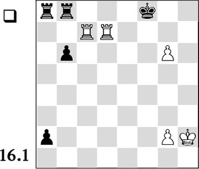
White has the ‘odious’ g-pawn, as was discussed in the study material of this chapter. So should he settle for a draw?
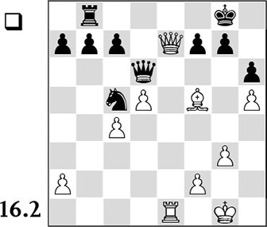
The white queen has invaded the seventh rank via the only open file. However, Black has put up a solid barrier that appears hard to breach. How can White make progress?
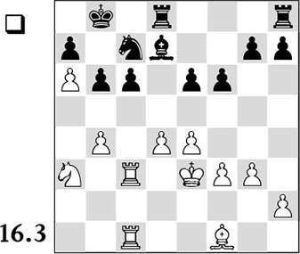
White is better thanks to his space advantage, but it is hard to see how he should make progress. He may sacrifice a pawn with 31.b5. After 31…♘xb5, which piece would you use to take back? And what have you planned if you have invaded with your rook on c7 and you run into the reply …♖c8 ?
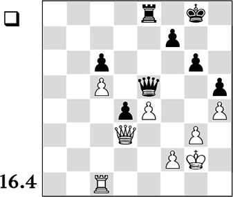
White’s pawn on e4 is hanging. Therefore he decides on 34.f3. It is clear that his second rank is now seriously weakened, and Black tries to exploit this. The follow-up was interesting: 34…♖a8 35.♕c4 ♖a3 36.♖d1 ♖c3 37.♕a4
Now answer the following questions:
a) What would Black play after 37.♕xd4?
b) What was Black’s strong continuation after the text move?